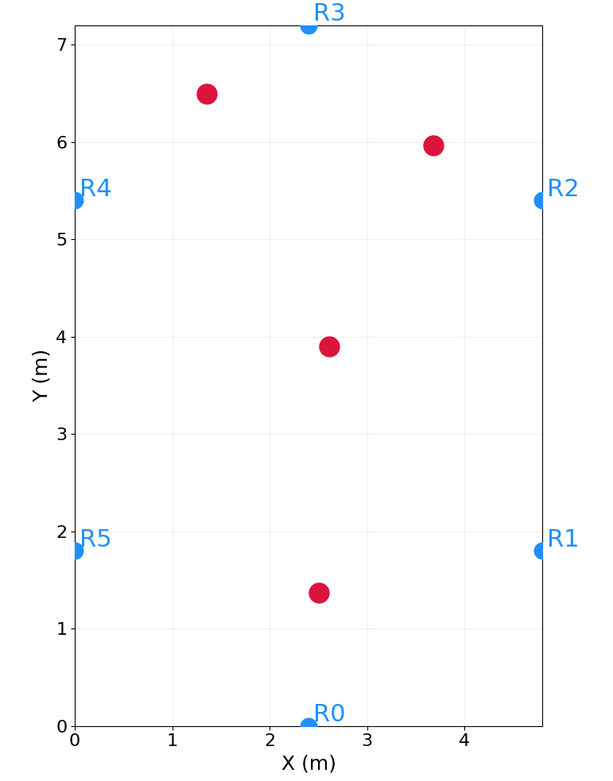
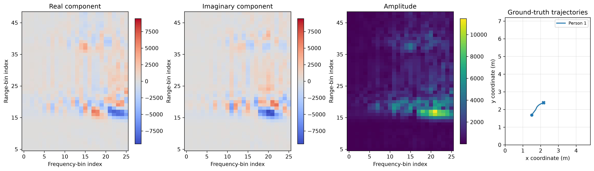
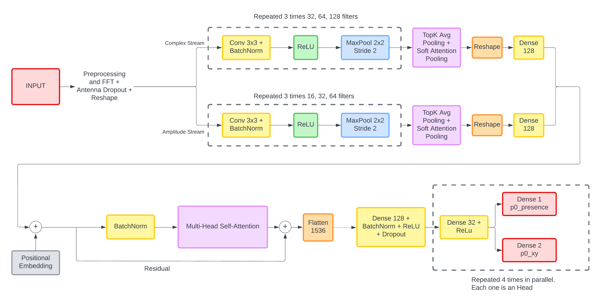

Embedded and Edge Artificial Intelligence Project
This project explores privacy-preserving indoor localization using Ultra-Wideband radar and a compact neural network designed for edge deployment.
Developed with Samuele Tondelli for the Embedded and Edge Artificial Intelligence course at Politecnico di Milano, the system estimates the two-dimensional positions of up to four people without cameras or wearable devices. It processes raw Channel Impulse Response measurements from six UWB radars and runs as a fully quantized INT8 TensorFlow Lite model.
Six fixed radars, each with three antennas, surround a 4.8 m × 7.2 m room and sample complex UWB signals at 25 Hz. The dataset contains 180,000 frames covering an empty room and scenarios with up to four people. Besides localizing each person, the model must determine how many people are present and avoid false detections when the room is empty.

Acquisition room layout: radars are shown in blue and example person positions in red.
The pipeline removes static reflections with exponential-moving-average background subtraction, then groups 50 consecutive frames into a two-second input window. A temporal FFT transforms each complex signal into a range-frequency representation. Its real component, imaginary component, and amplitude preserve complementary phase and reflection-strength information while selected bins keep the input compact.

Example FFT representation and the corresponding ground-truth trajectory.
Separate convolutional encoders process the complex FFT components and their amplitude. The resulting tokens from all six radars are fused by one lightweight multi-head self-attention layer. Four independent prediction heads each output a 2D position and a presence score, allowing the same model to handle a variable number of people. Hungarian matching assigns these unordered predictions to the ground truth during training.

The final dual-encoder architecture, with attention-based radar fusion and four parallel detection heads.
Post-training INT8 quantization reduced the model and activation memory substantially while preserving almost all of the floating-point model's performance. The final model satisfies both embedded deployment constraints: a model smaller than 800 KB and an activation arena below 300 KB.
| Metric | Final INT8 model |
|---|---|
| Average localization error | 0.4862 m |
| Count accuracy | 86.7% |
| F1 score | 0.8242 |
| TensorFlow Lite model size | 551.2 KB |
| Activation arena | 266.6 KB |
The experiments showed that preserving the structure of the radar signal was more effective than simply increasing model complexity. Frequency-domain features, separate complex and amplitude branches, compact attention-based fusion, and quantization-aware checkpoint selection produced a deployable model with only a small performance loss after conversion to INT8.